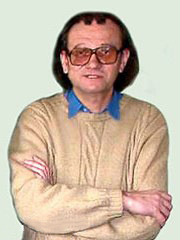

Ганюшкін Олександр Григорович
Доцент кафедри, кандидат фізико-математичних наук
 Scopus Author ID: 6505930071
Scopus Author ID: 6505930071
 Google Scholar
Google Scholar
Контакти
Механіко-математичний факультет, кімната 225
Тел.: +380 44 259 0517
E-mail: ganiyshk@univ.kiev.ua, ganiyshk@gmail.com
Загальна інформація
У 1975 році закінчив механіко-математичний факультет Київського державного університету iм. Т.Г.Шевченка.
Кандидат фізико-математичних наук ( 1982, Київський державний університет ім. Т.Г. Шевченка, спеціальність - алгебра, теорія чисел i математична логіка )
З 1978 по 1993 рік – асистент кафедри алгебри та математичної логіки.
З 1993 року i до теперішнього часу – доцент кафедри алгебри та математичної логіки (з 2021 року кафедри алгебри і комп’ютерної математики).
У 1998 році присвоєне звання доцента кафедри алгебри та математичної логіки.
Нагороджений відзнакою “Відмінник народної освiти” (1986).
Викладацька робота
Нормативнi курси: лiнiйна алгебра, алгебра і теорія чисел, дискретна математика, математична логіка, комбінаторний аналіз, математичні основи захисту iнформацiї, історія математики.
Спецкурси з теорії груп, теорії напівгруп, основних алгебричних структур, теорії моделей та iн.
Наукова діяльність
Основні напрямки: теорiя груп, теорiя напiвгруп, комбiнаторний аналiз.
Є керівником 11 захищених кандидатських робіт.
Є автором або співавтором близько 50 наукових статей, півтора десятка науковопопулярних статей i півтора десятка книг та навчальних посібників.
Основні публікації
- Українськi математичнi олiмпiади. Довiдник (посiбник для вчителiв). Київ, Вища школа, 1993, 415 ст. (спiвавтори Вишенський В.А., Карташов М.В., Михайловський В.I., Призва Г.Й., Ядренко М.Й.)
- Елементитеорi чисел(навчальнийпосiбник)//Видавничо полiграфiчн.центр Київський ун-т , Київ, 2003, 202 ст. (разом iз Безущак О.О.)
- Теорiя груп // Видавничо полiграфiчн. центр Київський ун-т , Київ, 2005, 126 ст. (Безущак О.О.)
- Classical nite transformation semigroups. An introduction. // Springer Verlag, 2009, xii + 314 p. (разом iз Мазорчуком В.С.)
- Завдання до практичних занять з лiнiйної алгебри (векторнi простори) // Видавничо полiграфiчн. центр Київський ун-т , Київ, 2010, 257 ст. (разом iз Безущак О.О.)
- Вступ до алгебри. // Видавничо полiграфiчн. центр Київський ун-т , Київ, 2014, 183 ст.
- Завдання до практичних занять з алгебри i теорiї чисел (теорiя груп) (4-е вид., доповнене й виправлене). // Видавничо-полiграфiчн. центр Київський ун-т , Київ, 2015, 131 ст. (разом iз Безущак О.О.)
- Подпрямые и расслоенные произведения групп // Докл. АН СССР, 1982, т.266, 6, 1291-1294.
- Iзольованi та нiльпотентнi пiднапiвгрупи скiнчено iнверсно симетрично напiвгрупи // Доповiдi АН України, Серiя А, 1993, 9, 5-9. (разом iз Кормишевою Т.В.)
- О нильпотентных подполугруппах конечной симметрической инверсной полугруппы // Матем.заметки, 1994, т.56, вып.3, 29-35. (разом iз Кормишевою Т.В.)
- Вычисления в группах изометрий конечных метрических пространств // Кибернетика и системный анализ, 1994, 4, 1-24. (спiвавтори Сущанський В.I., Цвiркунов В.В.)
- О классификации конечных метрических пространств // Матем. заметки, 1994, т.56, вып.4, 48-58. (разом iз Цвiркуновим В.В.)
- Факторстепени конечных симметрических групп//Матем.заметки,1995,т.58, вып.3, 176-188. (разом iз Мазорчуком В.С.)
- Строение подполугрупп факторстепеней конечных симметрических групп // Матем.заметки, 1995, т.58, вып.4, 341-354. (разом iз Мазорчуком В.С.)
- Групи автоморфiзмiв максимальних нiльпотентних пiднапiвгруп напiвгрупи IS(M) // Матем.Студi , 2000, т.13, 1, 11-22. (спiвавтори Темнiков С.Г., Шафранова Г.М.)
- Про порядки одного класу нiльпотентних напiвгруп та х груп автоморфiзмiв // Алгебраїчнi структури та їх застосування , Працi Укр.матем.конгресу 2001, Iн-т матем. НАН України, 2002, 17-21. (разом iз Павловим М.)
- On the structure of IOn // Semigroup Forum, vol.66 (2003), 455-483. (разом iз Мазорчуком В.С.)
- L-and R-Cross Sections in ISn // Communications in algebra, vol.31 (2003), No.9, 4507-4523. (разом iз Мазорчуком В.С.)
- Combinatorics of Nilpotents in Symmetric Inverse Semigroup // Annals of Combinatorics, vol.8 (2004), 161 175. (разом iз Мазорчуком В.С.)
- Combinatorics and distributions of partial injections // Australas. J. Combin., vol.34 (2006), 161-186. (разом iз Мазорчуком В.С.)
- On classifcation of maximal nilpotent subsemigroups // Jornal of Algebra, vol.320 (2008), 3081-3103. (разом iз Мазорчуком В.С.)
- On the irreducible representations of a finite semigroup // Proc. Amer. Math. Soc., vol.137, No 11 (2009), 3585-3592. (спiвавтори Mazorchuk V., Steinberg B.)
- On Kiselman quotients of 0-Hecke monoids // International Electronic Journal of Algebra, vol.10 (2011), 174-191. (разом iз Мазорчуком В.С.)
- Length of the inverse symmetric semigroup // Algebra and Discrete Math., vol. 12 (2011), 2, 64-71. (разом iз Лiвiнським I.)
- Variants of the lattice of partitions of a countable set // Algebra and Discrete Math., vol. 26, 2018, 1, 8-18. (разом iз Десятерик О.)
- Automorphism group of some variants of lattices. // Carpathian Math. Publ. 2021, 13(1), 141-148. (разом iз Десятерик О.)